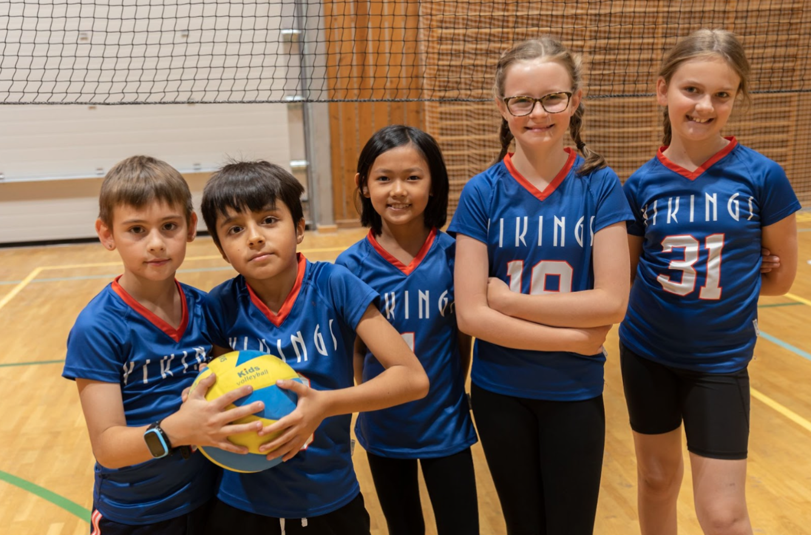

Volleyball is a highly popular co-curricular activity offered in many schools. It is a team sport that requires players to work together to pass, set, and spike the ball over the net in order to score points. Participating in a school volleyball team can offer students many benefits, including opportunities to develop teamwork and communication skills, physical fitness, and self-discipline. In Middle School Volleyball, students focus on playing a game of mini volleyball where skills can be developed in a mini-game competition.Overall, volleyball is a great way for students to stay active, make friends, and develop important life skills.
Grades:
3
4
5
Location:
ISS Gym
Supervisors:
ad@isstavanger.no
Time:
Tuesday & Thursday 15:30 - 16:30
